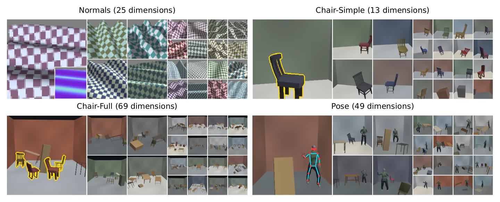
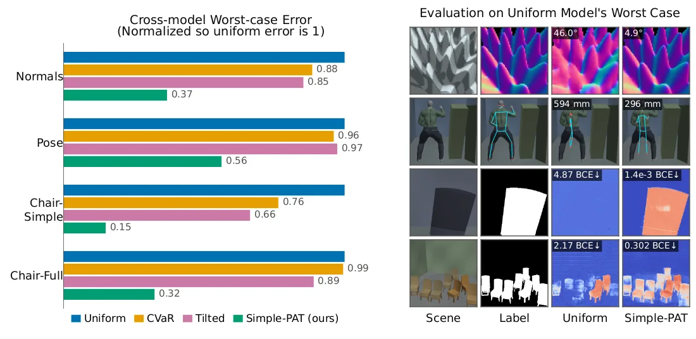
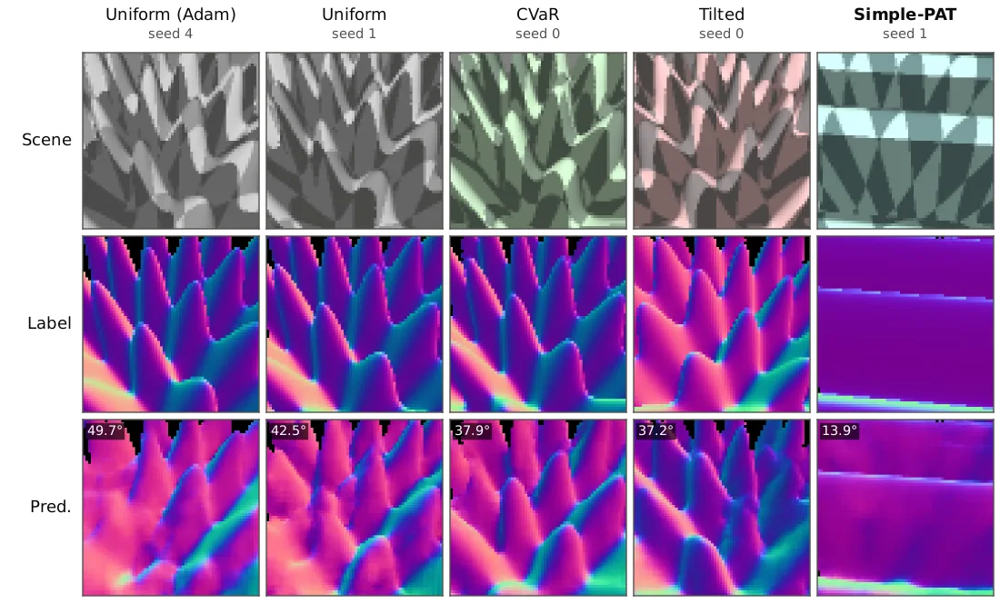
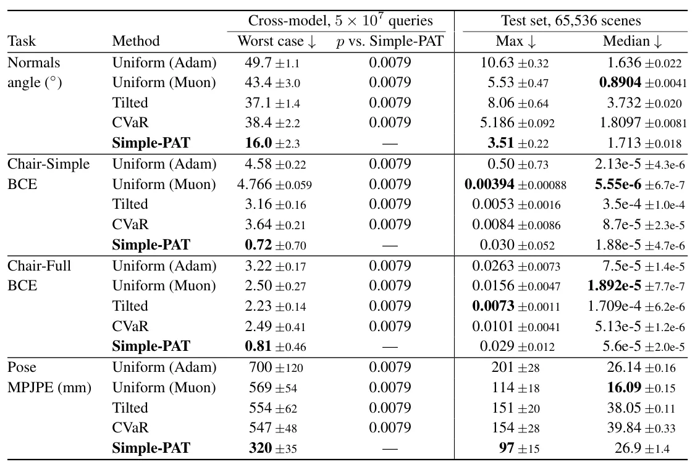

O Problema do Erro de Pior Caso
Modelos de visão computacional modernos, especialmente os baseados em redes neurais profundas, frequentemente alcançam baixos erros médios em benchmarks padrão. No entanto, essa métrica de agregação esconde falhas críticas em cenas específicas que podem ser simples para humanos, mas catastróficas para a máquina. Em aplicações de alto risco, como veículos autônomos, robótica cirúrgica e máquinas pesadas, um único erro de percepção pode ter consequências graves. O desafio central não é melhorar a precisão média, mas sim identificar e mitigar esses modos de falha raros, mas perigosos.
A abordagem tradicional de aprendizado adversarial foca na perturbação de imagens existentes no dataset. Embora eficaz para ruídos sutis, essa técnica é limitada porque opera sobre uma base fixa de dados. Ela não consegue explorar o espaço completo de variações físicas válidas, como mudanças drásticas de iluminação, ângulos de visão nunca vistos antes ou deformações de forma que não estejam presentes nos exemplos originais. Coletar dados reais para cobrir esses casos é lento, caro e, muitas vezes, impossível de escalar.
Os autores, Jack Nugent e Jia Deng, da Princeton University, propõem uma mudança de paradigma: em vez de perturbar imagens, eles perturbam o processo de geração das imagens. O framework chamado Procedural Adversarial Learning (PAL) utiliza geradores procedurais, que são programas interpretáveis capazes de renderizar imagens e seus rótulos de verdade fundamental (ground truth) a partir de um vetor de parâmetros de controle. Isso permite a geração sob demanda de cenários infinitamente variados e fisicamente plausíveis.

O Mecanismo do PAL e o Simple-PAT
O cerne do PAL é um jogo minimax entre o aprendiz (o modelo de visão) e o adversário (o gerador procedural). Durante o treinamento, o modelo tenta minimizar o erro, enquanto o adversário tenta encontrar o conjunto de parâmetros no gerador procedural que maximiza esse erro. Diferente de métodos que usam gradientes para ajustar os parâmetros adversariais, o Simple-PAT introduz um algoritmo de otimização de ordem zero. Isso significa que ele não precisa calcular derivadas da função de perda em relação aos parâmetros do gerador, o que seria computacionalmente proibitivo ou impossível devido à natureza não diferenciável da renderização.
O Simple-PAT utiliza o algoritmo CMA-ES (Covariance Matrix Adaptation Evolution Strategy) para buscar no espaço de parâmetros do gerador. O CMA-ES é um método evolucionário que adapta uma distribuição de probabilidade sobre os parâmetros a cada iteração, focando nas regiões que produzem maior erro para o modelo atual. Durante o treino, o adversário gera um lote de imagens adversariais que são usadas para atualizar os pesos da rede neural. Isso força o modelo a aprender características robustas que generalizam para cenários difíceis, em vez de apenas memorizar padrões comuns do dataset.
Para avaliar a eficácia do método, os autores criam o PAL-Dojo, um conjunto de geradores procedurais eficientes para três tarefas principais: estimativa de normais de superfície, segmentação de imagens e estimação de pose humana. Esses geradores permitem controlar variáveis como layout de objetos, iluminação, pose e textura, criando um espaço de busca rico e estruturado. A avaliação adversarial (PAE) então busca ativamente o pior caso possível dentro desse espaço, usando um orçamento computacional limitado de consultas ao modelo.
Comparação com Baselines Robustos
Para validar o Simple-PAT, os autores o comparam com métodos de treinamento padrão e técnicas de reponderação robusta. As baselines incluem: Treinamento Uniforme (amostragem aleatória simples), CVaR (Conditional Value at Risk, que foca na média dos piores α% dos casos) e Tilted ERM (que pondera os gradientes exponencialmente com base no erro, aproximando uma otimização do pior caso dentro do batch). Esses métodos são considerados fortes na literatura de aprendizado robusto, mas operam sobre distribuições fixas ou amostras limitadas.
O experimento utiliza um protocolo de avaliação rigoroso chamado Cross-Model Evaluation. Em vez de avaliar cada modelo apenas nos casos adversariais que ele mesmo encontrou, os autores avaliam cada modelo nos piores casos encontrados por adversários contra *outros* modelos. Isso revela se a robustez é específica do modelo ou generalizável. O adversário tem um orçamento de 50 milhões de consultas agregadas entre todos os modelos, mas cada modelo individual é avaliado com 2 milhões de consultas, divididas entre buscas DIRECT-L e CMA-ES refinadas.
Os resultados mostram que o Simple-PAT supera consistentemente todas as baselines. A tabela de resultados (Table 2) apresenta o erro de pior caso (worst-case error) para quatro configurações de tarefas. Em todas as métricas, o Simple-PAT atinge os menores valores de erro máximo. A diferença estatística é significativa, com valores p de 0.0079 em todas as comparações, indicando que o desempenho superior não é fruto do acaso.

Análise dos Resultados Quantitativos
Os números revelam ganhos substanciais na robustez. Comparado ao treinamento uniforme com o otimizador Muon, o Simple-PAT reduz o erro de pior caso em uma média geométrica de 3.15x. Quando comparado à baseline mais forte para cada tarefa específica, a redução média é de 2.63x. Por exemplo, na tarefa de estimativa de normais, o erro máximo caiu de 43.4 graus (Uniform Muon) para 16.0 graus (Simple-PAT). Na segmentação de cadeiras (Chair-Simple), o erro BCE máximo caiu de 4.76 para 0.72, uma redução de 6.64x.
É importante notar que a melhoria no pior caso não veio à custa do desempenho médio. Na verdade, o Simple-PAT mantém ou melhora a mediana do erro em muitas tarefas. Na tarefa de pose, o erro mediano do Simple-PAT é apenas 1.1 cm pior que o do treinamento uniforme, mas o erro de pior caso é 25 cm melhor. Isso demonstra que o modelo não está apenas 'superajustado' aos casos difíceis, mas está aprendendo uma representação mais geral e robusta da cena.
Os autores também analisam o custo computacional. O processo de geração adversarial durante o treino consome recursos, mas é escalável. O adversário usa um orçamento de 1 milhão de consultas para DIRECT-L e 1 milhão para CMA-ES durante o treino, representando cerca de 39% do orçamento total de amostragem. A avaliação final usa um adversário mais poderoso com população maior e reinicializações (IPOP) para convergir melhor, mas o custo de treinamento permanece viável para redes de tamanho médio (5-7.8M parâmetros).

Aplicação a Modelos Foundation SOTA
Além de treinar modelos do zero, os autores aplicam o framework PAL-Dojo para avaliar a robustez de modelos foundation de última geração (SOTA), como MoGe-2 e SAM 3. Esses modelos não foram treinados com o Simple-PAT, servindo como um teste de estresse para a arquitetura atual da visão computacional. Os adversários procuraram os piores casos para esses modelos e encontraram falhas significativas, muitas vezes em configurações de iluminação ou geometria que parecem triviais.
Essa avaliação destaca que, mesmo os modelos mais avançados têm pontos cegos estruturais. O Simple-PAT não é apenas uma técnica de treino, mas também uma ferramenta de diagnóstico poderosa. Ao expor esses modelos a cenários gerados proceduralmente e adversarialmente, os pesquisadores podem identificar quais tipos de variações físicas os modelos atuais falham em generalizar, guiando o desenvolvimento futuro de arquiteturas mais resilientes.
A tabela de resultados mostra que, embora os modelos SOTA tenham bom desempenho em casos típicos, seus erros de pior caso são ordens de magnitude maiores que os do Simple-PAT treinado. Isso reforça a ideia de que a escala de dados e o tamanho do modelo, sozinhos, não resolvem o problema da robustez de cauda longa (long-tail robustness).
Limitações e Trabalho Futuro
Apesar dos resultados promissores, o paper reconhece limitações. A eficácia do PAL depende criticamente da qualidade e expressividade do gerador procedural. Se o gerador não puder simular certas variações físicas reais, o adversário não as encontrará. Isso cria um viés potencial: o modelo pode ser robusto aos cenários procedurais, mas falhar em dados reais que escapam ao modelo de geração.
Outra limitação é a dependência de um orçamento de consultas. A busca adversarial é computacionalmente intensiva. Embora o Simple-PAT seja mais eficiente que métodos baseados em gradiente direto para geradores complexos, ainda requer mais recursos que o treinamento uniforme. Os autores sugerem que futuras pesquisas podem explorar a estrutura compartilhada entre os casos adversariais encontrados por diferentes modelos para criar adversários ainda mais fortes e eficientes.
O código e os geradores do PAL-Dojo foram disponibilizados publicamente, permitindo que a comunidade valide e estenda o framework. A abordagem de aprendizado adversarial procedurals abre um caminho novo para a robustez em visão computacional, deslocando o foco da coleta de dados para a geração inteligente de cenários de teste e treino.

Conclusão
O Procedural Adversarial Learning (PAL) e o algoritmo Simple-PAT representam uma contribuição significativa para a busca de modelos de visão computacional robustos. Ao substituir a perturbação de dados estáticos pela geração procedural dinâmica e otimização de ordem zero, os autores conseguem explorar o espaço de entrada de forma muito mais ampla e profunda.
Os resultados demonstram que é possível reduzir drasticamente o erro de pior caso sem degradar o desempenho médio, um equilíbrio difícil de alcançar com métodos tradicionais. Para engenheiros e pesquisadores preocupados com a confiabilidade de sistemas de IA em cenários do mundo real, o PAL oferece uma ferramenta prática e teoricamente fundamentada para endurecer modelos contra falhas raras, mas críticas.
O que fica
- O Simple-PAT usa geradores procedurais para criar cenários adversariais sob demanda, fugindo de datasets estáticos.
- A otimização de ordem zero (CMA-ES) busca parâmetros que maximizam o erro do modelo durante o treino.
- O método reduz o erro de pior caso em até 6.6x comparado ao treinamento uniforme, sem comprometer a média.
- O PAL-Dojo oferece geradores eficientes para estimativa de normais, segmentação e pose humana.
Paper original: Procedural Adversarial Learning
Comentários
Nenhum comentário ainda. Seja o primeiro.